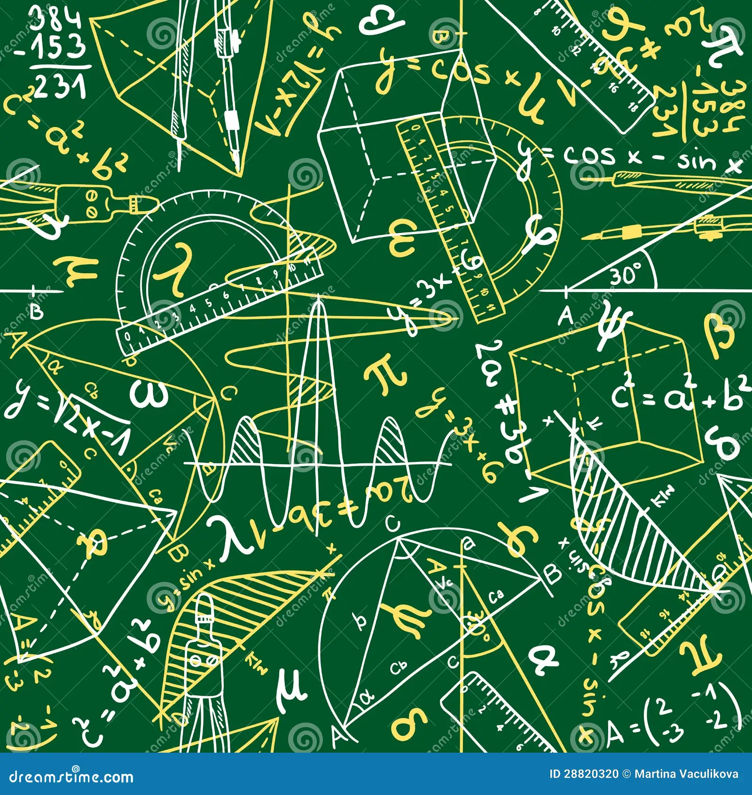

El cálculo diferencial (o simplemente cálculo dif.) es una rama del análisis
matemático que se enfoca en el estudio de las tasas de cambio de las funciones.
Se utiliza para analizar cómo las variables cambian en relación
con otras variables, empleando conceptos como límites, derivadas
e infinitesimales.
La física es una ciencia que estudia las propiedades de la materia
y la energía, así como las interacciones entre ellas. Busca comprender
y describir fenómenos naturales mediante leyes y principios fundamentales.
La física es una disciplina científica que se enfoca en entender
las leyes que rigen el comportamiento de la materia, la energía,
el tiempo y el espacio. Estudia fenómenos desde lo microscópico
La programación web es el desarrollo de aplicaciones
y sitios web mediante la escritura de código en lenguajes
como HTML, CSS y JavaScript, que permiten crear contenido
interactivo y presentarlo en navegadores